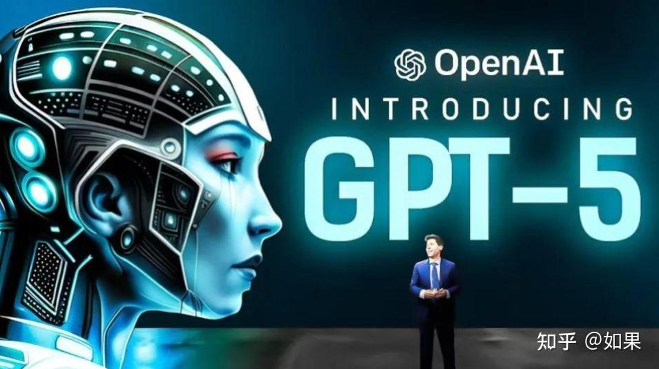
OpenAI
OpenAI用GPT-5.6重算推理成本
来源: OpenAI · 2026-07-30 · 原文链接
OpenAI 7 月 29 日发布 GPT-5.6 工程文章，把重点放在“frontier intelligence”与“frontier efficiency”的结合上。文章称 GPT-5.6 Sol 在 Artificial Analysis Coding Agent Index 上以不到 Claude Fable 5 一半的成本取得更高表现；Terra 在智能基准上接近 GPT-5.5、价格减半，Luna 则比 Sol 便宜 80%。OpenAI 还把优化拆到推理路由、调度、kernel、缓存、模型实现和 agentic harness，并称 GPT-5.6 Sol in Codex 参与了负载均衡和前向计算优化。
Janet 锐评：
这篇不是普通模型营销稿，它把大模型竞争从“我更聪明”推到“我每烧一块钱能多干多少活”。创作者看这个转向就够了：未来 API 账单不会因为模型强就自动合理，产品差距会藏在缓存、上下文压缩、路由和重复工作消除里。换句话说，会用模型的人会像抠供应链一样抠 token。
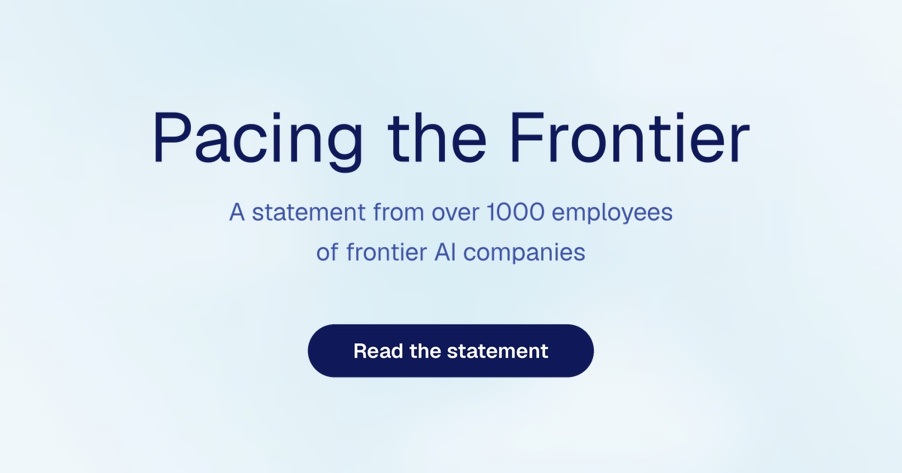
Pacing the Frontier
1273名AI员工签署减速声明
来源: Pacing the Frontier · 2026-07-30 · 原文链接
Pacing the Frontier 在 7 月发布声明，页面显示已有 1,273 名前沿 AI 公司员工签署，要求美国政府支持国际努力，开发能“deliberately pace the frontier of automated AI development”的技术和治理工具。签署者名单包括 OpenAI、Anthropic、Google DeepMind、Meta AI 等机构的研究和安全负责人。声明的核心担忧不是今天的聊天模型，而是 AI 公司可能接近自动化 AI 研究，能力进展会快到现有监督机制跟不上。
Janet 锐评：
刺耳的是，“减速”这次来自实验室里面的人。它可能被大厂拿来筑墙，也可能真是在给危险系统争取缓冲区；两件事可以同时成立。对国内团队来说，这不是美国政策八卦。自动化研发一旦纳入国际协调，模型、算力和评测入口都会更像许可证生意。
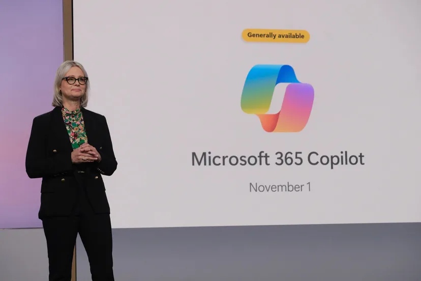
Microsoft Investor Relations
微软财报写入3000万Copilot席位
来源: Microsoft Investor Relations · 2026-07-30 · 原文链接
Microsoft 7 月 29 日发布 FY26 Q4 财报，季度营收 900 亿美元，同比增长 18%；Microsoft Cloud 营收 593 亿美元，同比增长 27%；Azure and other cloud services 增长 43%。Satya Nadella 称 Azure 年收入首次超过 1000 亿美元，Microsoft 365 Copilot 已超过 3000 万付费席位。财报还披露 FY26 全年营收 3318 亿美元，全年净利润 1337 亿美元。
Janet 锐评：
3000 万付费席位很硬，说明企业 AI 已经进了采购和续费表。席位数漂亮，不等于每个员工真省出时间；中小团队能抄的是收费逻辑，让 AI 变成岗位里的固定工作位。
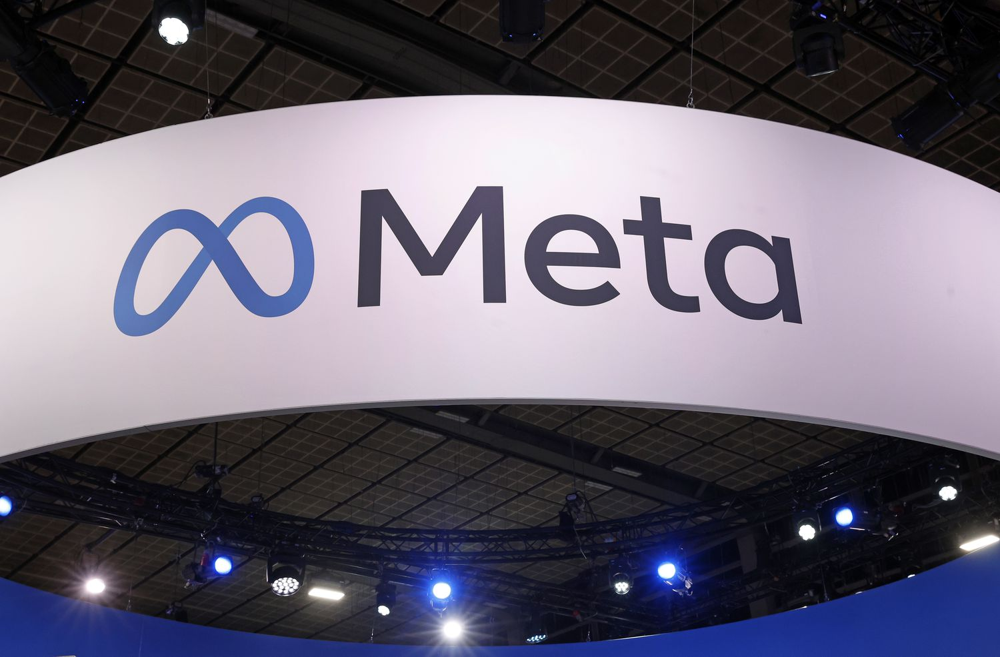
Meta Investor Relations
Meta给AI机房加1300亿支出
来源: Meta Investor Relations · 2026-07-30 · 原文链接
Meta 7 月 29 日发布 2026 年第二季度财报，季度营收 608.01 亿美元，同比增长 28%；成本和费用 420.26 亿美元，同比增长 55%；净利润 158.48 亿美元，同比下降 14%。公司把 2026 年 capex 指引收窄为 1300 亿到 1450 亿美元，此前低端为 1250 亿美元，并称成本中包含 24 亿美元法律相关费用和 11.8 亿美元与 2026 年 5 月裁员相关的 severance expenses。
Janet 锐评：
Meta 的 AI 故事很扎眼：广告机器还在赚钱，AI 机房也在疯狂吃钱，裁员费用和法律账单一起出现在同一页。Zuckerberg 可以说 AI 正在加速核心业务，但财报更诚实，告诉你这不是轻资产魔法。普通创业者听见“开源模型很便宜”时，最好顺手问一句：GPU、法务和组织成本谁扛？
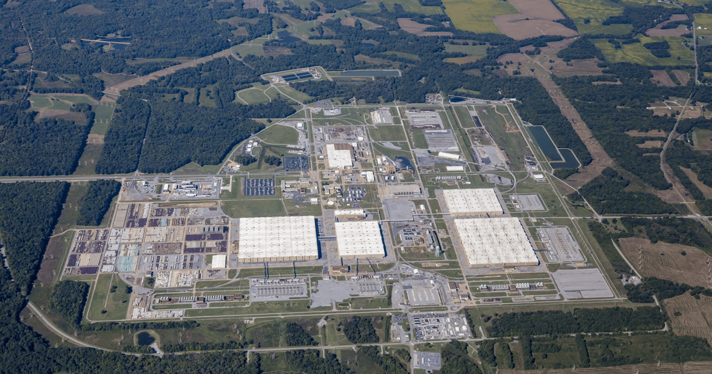
Data Center Knowledge
Brookfield选铀厂旧址建AI园区
来源: Data Center Knowledge · 2026-07-30 · 原文链接
Data Center Knowledge 7 月 29 日报道，Brookfield 与 NextEra 计划在肯塔基州前 Paducah Gaseous Diffusion Plant 建设约 1000 亿美元 AI data-center campus。项目目标到 2032 年提供超过 1.2GW compute capacity，并可扩至 1.8GW utility-delivered capacity；NextEra 计划配套最多 2GW 天然气发电和 2.6GW 电池储能。报道同时指出，该项目尚未披露 anchor AI customer 或开工日期，相关电力服务协议还需肯塔基监管批准。
Janet 锐评：
比又一个模型发布更现实的是，AI 扩张最后会落到土地、电力、审批和本地账单。所谓“自带电力”很好听，但专家提醒电池的 1GW 并不等于连续可用的 1GW，这才是冷水。内容创作者不用觉得它遥远，未来的便宜推理、视频生成和 Agent 执行，背后都有人在替你跟电网抢座。
OpenAI
OpenAI用两项设置拉高ARC分数
来源: OpenAI · 2026-07-30 · 原文链接
OpenAI 7 月 29 日发布 ARC-AGI-3 复盘，称 GPT-5.6 Sol 在官方 harness 上 ARC-AGI-3 public set 得分 13.3%，启用 retained reasoning 和 compaction 后升至 38.3%，同时 output tokens 减少 6 倍。文章解释，官方 harness 会丢弃私有 reasoning，并用 rolling truncation 丢掉旧动作；OpenAI 用 Responses API 保留推理、压缩上下文，更接近 ChatGPT 和 Codex 的生产设置。
Janet 锐评：
评测迷信该降温了。模型分数不是从天上掉下来的，它还吃 harness、上下文策略和 API 设置。OpenAI 有自证立场，当然要打个折；但它指出的坑是真坑。创作者做 Agent demo 时，模型名只是一半，另一半是它能不能记住自己刚干了什么。
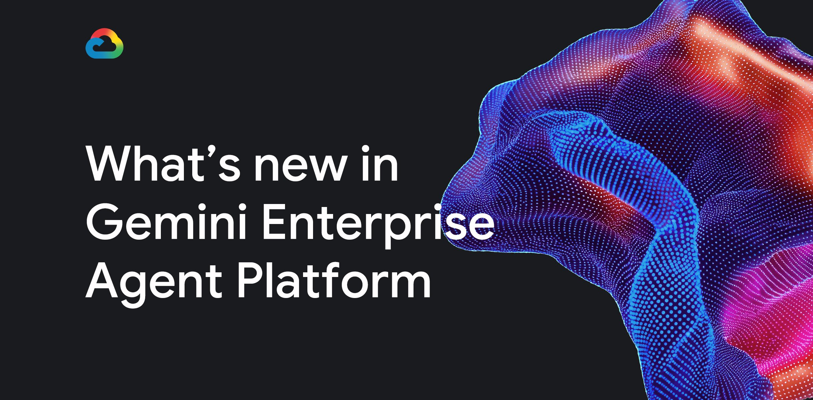
Google Cloud Blog
Google给Agent补身份和网关
来源: Google Cloud Blog · 2026-07-30 · 原文链接
Google Cloud 7 月 29 日宣布 Gemini Enterprise Agent Platform 多项能力开放给更多用户，包括 Agent Memory Bank、最长可运行 7 天的 Agent Runtime、Agent Identity、Agent Gateway、Agent Registry、Agent Evaluation 和 Agent Observability。Google 把 Agent Identity 定义为一种基于开放标准的新 native IAM type，可把访问权限绑定到 agent runtime，并为 agent 行为提供不可抵赖审计。
Janet 锐评：
Google 这次没在炫模型，而是在回答企业最烦的问题：这个 Agent 到底是谁、能拿什么、做错了算谁的。Agent Identity 听起来无聊，却可能比漂亮 demo 更接近预算。国内团队做 B 端 AI，“接入企业微信/飞书”只是入口，权限、审计、注册表和停机开关才是交付现场。
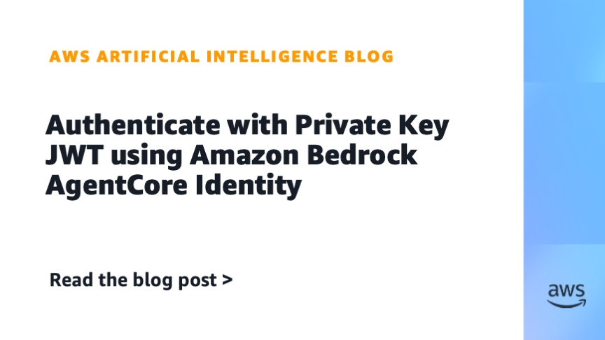
AWS Machine Learning Blog
AWS用私钥JWT替Agent密钥
来源: AWS Machine Learning Blog · 2026-07-30 · 原文链接
AWS 7 月 29 日宣布 Amazon Bedrock AgentCore Identity 支持 Private Key JWT client authentication。Agent 可以用签名 JWT client assertion 向下游 identity provider 的 token endpoint 认证，而不是使用共享 OAuth 2.0 client secret；公钥注册在身份提供方，私钥保存在 AWS KMS。AWS 将其定位为减少长期共享密钥暴露风险的 Agent 身份能力。
Janet 锐评：
Agent 进生产以后，最不性感的一层往往最要命。很多 demo 失败不是因为模型笨，而是 secret 放得像便利贴。Private Key JWT 不会让 Agent 更会说话，却能少一点共享密钥裸奔。工具链的现实很朴素：安全能力正在变成产品功能，不是发布前补一页免责声明。
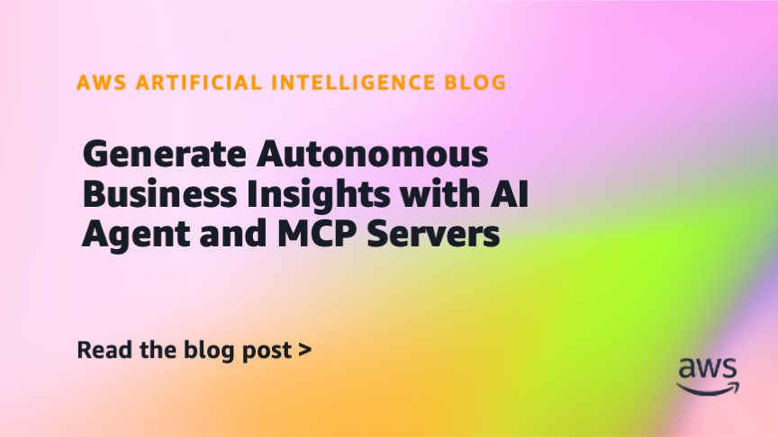
AWS Machine Learning Blog
AWS用MCP生成工厂周报
来源: AWS Machine Learning Blog · 2026-07-30 · 原文链接
AWS Machine Learning Blog 7 月 29 日发布教程，用 AI Agent 和 MCP servers 生成 Autonomous Business Insights。示例场景是制造负责人管理 12 条产线和 2,000 台机器，需要在生产会议前判断本周哪些产线需要关注。文章展示 Agent 如何发现并调用 MCP 工具，把数据查询、异常分析和业务洞察串成流程。
Janet 锐评：
MCP 的价值不在“又一个协议”，而在 Agent 终于知道该找哪个工具干活。AWS 这个制造场景很朴素，也因此靠谱：12 条线、2,000 台机器、一个会议前的问题。垂直 Agent 的现金味通常就藏在这里，高频、重复、带数据源、答案能立刻改变下一步动作。
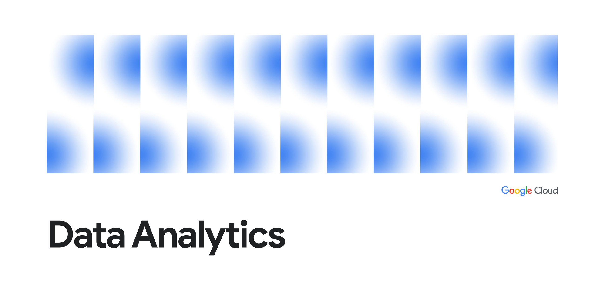
Google Cloud Blog
Google用Lakehouse接通跨云数据
来源: Google Cloud Blog · 2026-07-30 · 原文链接
Google Cloud 7 月 29 日在 Next Tokyo 期间宣布 borderless Lakehouse 增强，目标是让 Gemini Enterprise 和 conversational agents 在不搬移数据的情况下访问 on-prem、cross-cloud operational systems 和 SaaS application clouds。新能力基于 open Apache Iceberg，支持 AWS Glue、Databricks Unity Catalog、Snowflake Horizon 的 catalog federation preview，并通过 Knowledge Catalog 提供业务语义、lineage 和权限上下文。文章还称 BigQuery AI 有 token 控制，客户在内置 AI functions 上看到 230x token consumption reduction。
Janet 锐评：
Agent 进企业最卡的地方，不在聊天能力，而在它凭什么相信这张表、这列数、这个字段名。Google 的 borderless Lakehouse 其实是在卖“少搬数据、多给语义、少烧 token”。中小团队可以学这层逻辑：行业大模型先放一边，客户数据目录、指标定义和权限边界整理清楚，脏数据接上再强模型，也只会更快地产生脏结论。
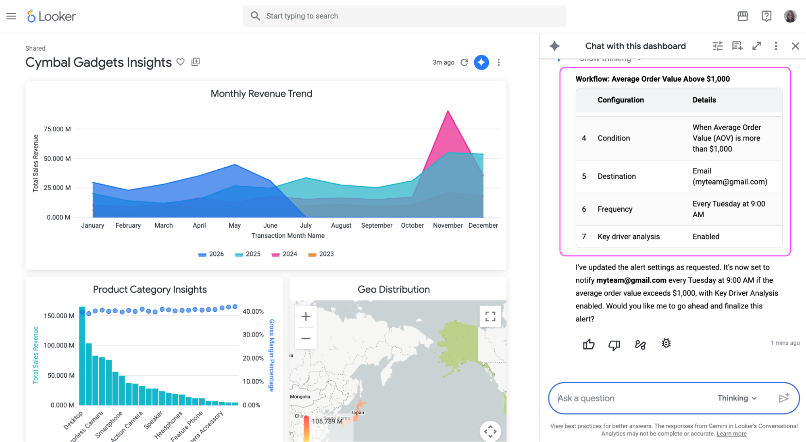
Google Cloud Blog
Looker用Agent追查指标波动
来源: Google Cloud Blog · 2026-07-30 · 原文链接
Google Cloud 7 月 29 日宣布 Looker Agentic Workflows 进入 preview。用户可在 Conversational Analytics 界面用自然语言创建监控，例如监控退货率或平均订单价值；当指标触发阈值时，后台 Agent 会运行 Key Driver Analysis，隔离可能驱动变化的产品类别或客户 cohort，并把诊断摘要发送到 Slack 或 email。管理员仍可在中央界面审查、修改或停用 workflows。
Janet 锐评：
BI 的老问题是：报警很勤快，解释很偷懒。Looker 这次把“为什么变了”前移到通知里，方向是对的；但 root-cause analysis 只有在指标口径干净、维度不乱时才有意义。公司如果连退货率怎么算都吵不清，Agent 自动追因只会提前制造一份更精致的争吵材料。
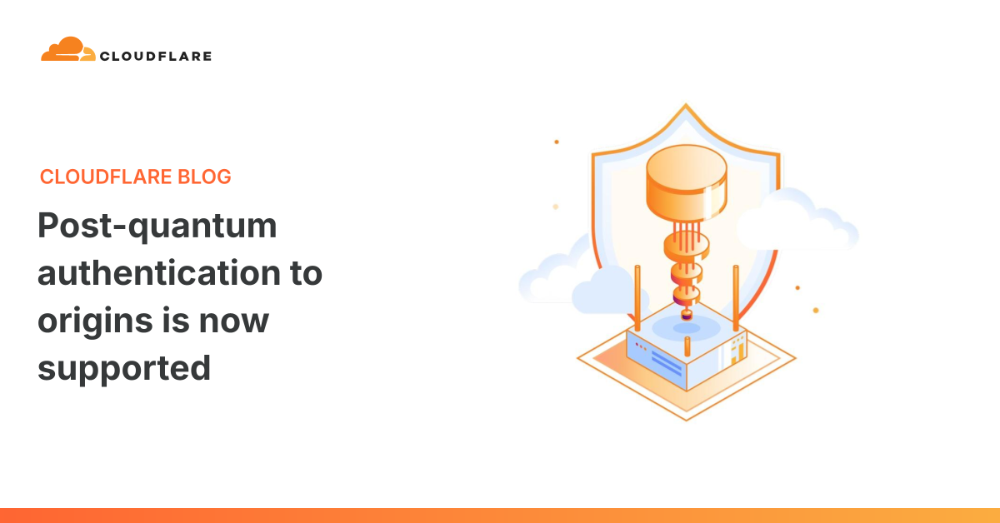
Cloudflare Blog
Cloudflare支持源站后量子认证
来源: Cloudflare Blog · 2026-07-30 · 原文链接
Cloudflare 7 月 29 日宣布 Authenticated Origin Pulls 和 Custom Origin Trust Store 支持 post-quantum authentication。Cloudflare 称过去几年重点是 post-quantum encryption，用来应对 harvest-now/decrypt-later 风险；近期量子计算和密码分析进展让认证迁移时间线提前，因此开始部署面向 origin server 的后量子互认证连接，防止未来量子能力破坏传统凭证并造成 impersonation attacks。
Janet 锐评：
它跟大模型不直接相关，却跟 AI 时代的基础设施很相关。越多 Agent 进入业务系统，凭证、来源和连接认证就越不能靠旧习惯硬撑。后量子认证现在看像超前焦虑，等到迁移窗口被压缩时就会变成停机事故。安全基础设施的价值通常不在热搜里，而在你没出事的那天。
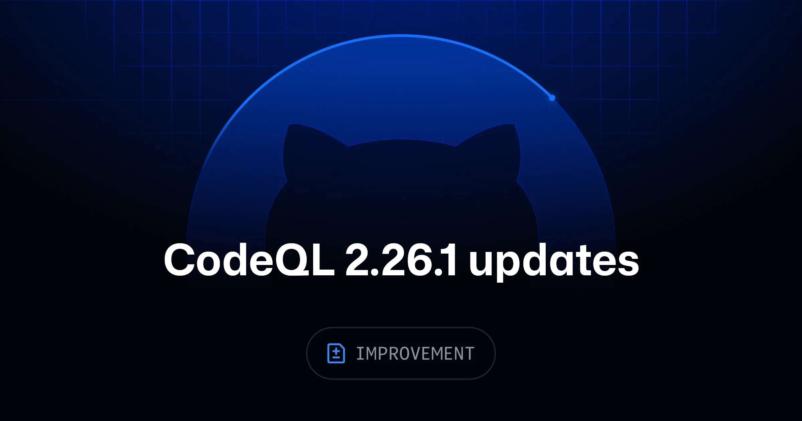
GitHub Changelog
GitHub用CodeQL减少Rust误报
来源: GitHub Changelog · 2026-07-30 · 原文链接
GitHub Changelog 7 月 29 日发布 CodeQL 2.26.1，称新版提升了 Go、Java/Kotlin、JavaScript/TypeScript 的 framework coverage，并减少 Rust analysis 的 false positives。CodeQL 是 GitHub code scanning 背后的静态分析引擎，用于发现和修复代码安全问题。
Janet 锐评：
自动修漏洞越热，静态分析越不能掉线。模型能写补丁，但扫描器得先分清真问题和误报；误报少一点，自动化才少一点瞎忙。
今日核心预测
Microsoft Investor Relations
Azure用43%增长支撑AI估值
来源: Microsoft Investor Relations · 2026-07-30 · 原文链接
Microsoft FY26 Q4 财报显示，Intelligent Cloud 季度营收 393.06 亿美元，同比增长 32%；Azure and other cloud services 增长 43%。公司还披露 FY26 全年 Microsoft Cloud revenue 和 Azure 年收入首次跨过关键规模线，Nadella 在财报中把 token 转成 business results 作为叙事核心。
Janet 锐评：
投资人现在看的不只是 demo，更是 AI 需求能不能接进云收入。Microsoft 的优势是它既卖模型入口，也卖企业身份、办公套件和云算力，账单天然能串起来。缺点也明显：一旦企业发现 Copilot 席位省不出真工时，增长故事就会在续费会议上被拷问。
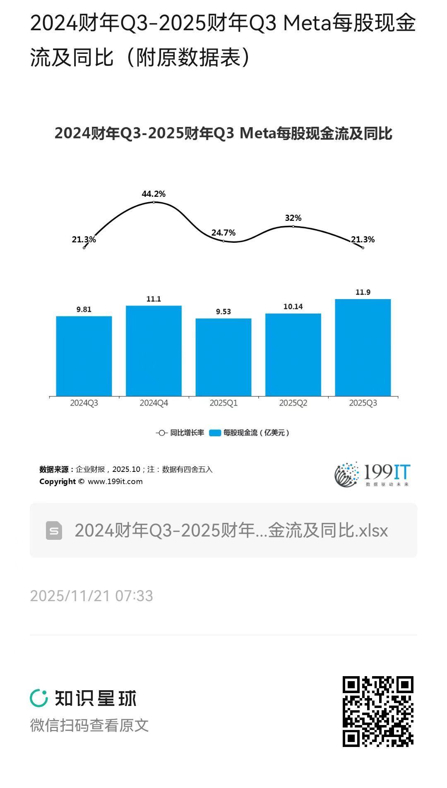
Meta Investor Relations
Meta让机房吃掉自由现金流
来源: Meta Investor Relations · 2026-07-30 · 原文链接
Meta Q2 财报显示，季度经营现金流为 318.6 亿美元，但 free cash flow 只有 7.84 亿美元；同季 capex 达 310.8 亿美元。公司将全年 capex 指引收窄至 1300 亿到 1450 亿美元，并继续把 AI datacenter buildout 作为主要支出方向。
Janet 锐评：
Meta 这张表专给“AI 会自动提高利润率”的故事降温。营收很猛，广告也强，但自由现金流被机房吃到只剩一小截。AI 投资不是买几张卡，它会改写现金流节奏。中小公司复制不了这套打法，除非手里也有一台能不断吐现金的广告机器。
Data Center Knowledge / AI Weekly
Paducah用电力政治定价AI园区
来源: Data Center Knowledge / AI Weekly · 2026-07-30 · 原文链接
Brookfield 与 NextEra 的 Paducah AI campus 计划强调“bring your own power”，并把成本承担与 White House Ratepayer Protection Pledge 放在叙事中心。Data Center Knowledge 报道称，项目预计带来约 8,000 个 construction jobs 和 600 个 permanent operations jobs，但也指出名称plate power 与 firm capacity 不能简单等同，监管审批和 anchor tenant 仍未确定。
Janet 锐评：
AI 基建投资正在从“谁有 GPU”变成“谁能不惹怒电网和居民”。这会改变估值逻辑：机房项目不只是技术资产，也是地方政治、公共事业和能源金融的混合体。创作者听见的是远方雷声，投资人看到的则是下一轮 AI 泡沫最容易露馅的地方。